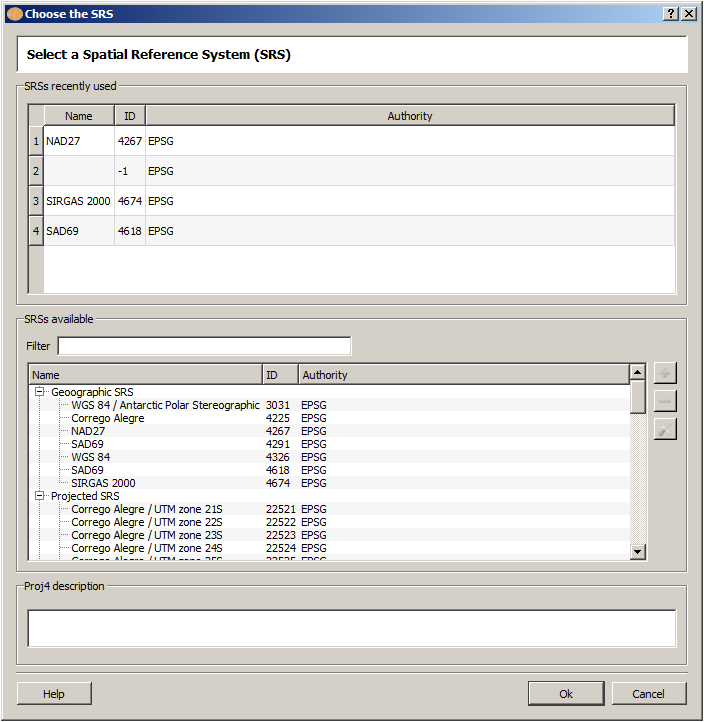
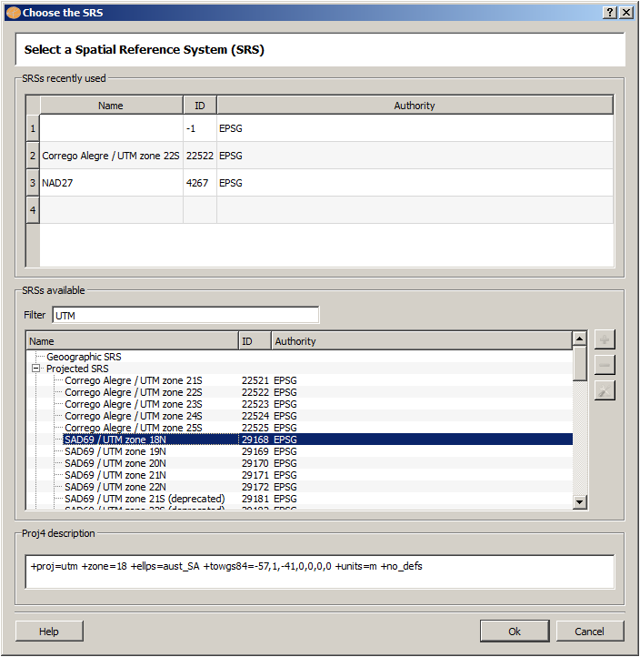

The Spatial Reference System interface is used to define or change the SRID of a layer, and also to set or change the map display SRID.
It is accessible through:
Layer Explorer | Right Click over a Layer | Inform SRS...
Map Display | Right Click inside the map display area | SRS...
Use Tools | Customize... | Tools Bars | SRS and/or SRID to make both icons available at the tool bar. There is also a icon called UnknownSRID used to reset the map display SRID.
When more than one layer is selected to be draw, the first valid layer-SRID is used to set the map display SRID, and the other layers are remapped to the map display SRID as necessary.
To choose a SRS, click over its Name, note the Proj4 description and click on OK.

It is also possible to filter some SRSs using a word or a number at Filter. For example fill the word UTM and see all SRID that have this word in its definition. Try to fill Filter with the following words one at once and see the SRSs showed: Corrego Alegre, Sirgas, 2916, 29168, etc.
